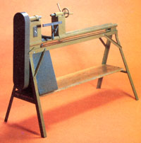

Any aspiring woodworker who has unhappily eyed the monotonously round or square legs on his or her homebuilt furniture has - at one time or another - wanted to own a wood-turning tool. The trouble is, a lathe hardly rates first priority on the purchasing list for a growing shop . . . since the cost of such a device simply isn't justified by its versatility.
Consequently, MOTHER's fabricators figured that the assembly of a wood turner from scrounged materials would be a perfect project for the discerning - but frugal - wood fashioner. Our researchers dug deep into their heaps of scraps and spare parts, and managed to pull out all the pieces necessary to build a fine spinner . . . with the exception of a ball bearing mandrel, and two spurs purchased from Sears, Roebuck and Company.
The finished lathe - which will accommodate wood chunks up to three feet long and over a foot in diameter - turns out handsomely carved legs and rungs ... while costing just a few cents over $20 to build. (Of course, unless your scrap pile has achieved the proportions of MOTHER's, you're likely to spend a few dollars more for new materials . . . but this tool would be a bargain at five times our price.)
THE BED
Common angle iron, U-channel, and a piece of pine shelving (as shown in Fig. A) make up the base upon which the tool's working parts ride. You'll find the components specified in the Materials List, and the dimensions and weld points are indicated in Fig. B. The legs for the stand are bent to square up to the U-channel base . . . a task that's much easier if the bend points are first heated with an oxyacetylene torch. In addition, the angle iron used for the braces - which span between each leg and the base - should be bent and ground so no sharp edges protrude.
In order to avoid banging your shins on the 1 X 12 wooden support shelf, round the board on its "working side" - and set its far edge against the opposite legs - before drilling and bolting the shelf in place.
Furthermore, since washing machine motors have different mounting configurations, be sure to design the braces for the "power plant" (they're welded to the left rear leg) specifically to fit the bolt pattern on your unit. It's also a good idea to provide for a sliding mount . . . so belt tension can be adjusted.
THE WAYS
In order to clamp different lengths of wood into the lathe's spindles, the tailstock assembly slides on a pair of tubular steel tracks . .. as detailed in Fig. B. The runners - which slip along the lathe's ways - are made of larger tubing, which provides a .005" fit . . . and the tool rest slides on a foot of exactly the same specifications. (Note: When centering the two tubes which form the ways, be extremely careful to ensure that the "pipes" are parallel and that no parts become distorted by the welding heat. In addition, file off any welding spatter which might interfere with the smooth sliding of the parts.)
THE POWER TRAIN
Any 1/2-HP washing machine motor can be coupled - by way of a pair of three - step pulleys and a V-belt - to the ball bearing mandrel in order to provide power to the lathe. If your motor is a single-speed unit (and there are some two-speed examples available which can be incorporated into our lathe design), the spindle will turn at either 950, 1,725, or 3,125 RPM . . . depending on the belt's position on the pulleys.
SPINDLES
Most mandrels have a 3-1/4" X 5-1/4" bolt pattern and an overall shaft length of approximately 10 inches. Such a unit will fit neatly atop the 4" X 6" plate on the headstock box.
On the other hand, the construction of the tailstock spindle is more involved. A hint: When welding nuts to the various parts, install the bolts before tacking, so that the threads of the nut won't be distorted by the heat. (Note, too, that the 5/8" coupler nut must be driven into the two 3/4" coupler nuts before it's welded in place.)
HEAD- AND TAILSTOCKS
The working portions of the lathe are set atop steel box sections ... with access holes cut for the clamping bolt (on the tailstock) and the switch and wires (on the headstock). The spindles on the headstock and tailstock must be perfectly aligned to prevent wobble. One way to accomplish this is to weld the headstock into position first, and then align the tailstock to it. Slip one of the pulleys onto the spur end of the mandrel and slide the tailstock spindle shaft into the other end of the pulley. Then weld the tailstock box to its runner.
DETAILS
The lathe's switch is a common wall box set inside the headstock and wired to interrupt the flow of power to the motor. And, since the brushes of the power unit could conceivably become fouled with the shavings from the woodwork, the motor and the belt drive are enclosed in a sheetmetal box with an access door.
CARVING
Once you've applied a coat of paint to the lathe, you'll be ready to try some wood turning. There are a number of different ways that this tool can be used to turn out finish-quality work, and - if you're not already familiar with basic lathe - operating procedures - you'll get the most use from the tool by doing a little outside study.
Who knows? You might end up becoming involved enough to build a faceplate for your lathe to turn out bowls . . . or your interest might turn to any number of other possibilities which your new tool - with a few "homegrown" modifications - is capable of.
|
 |
|
|
|
|
|
|